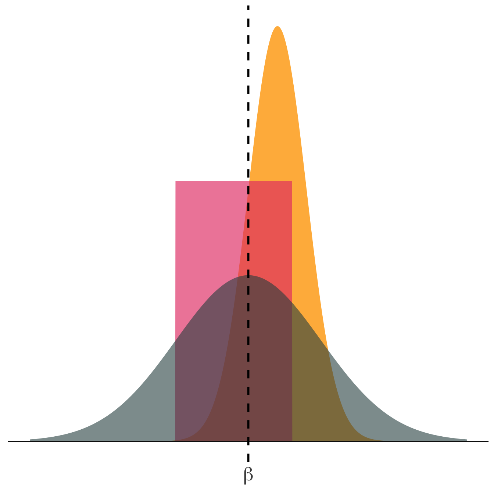

2 Regresión lineal
🯠Objetivo del capÁtulo
En este capitulo vamos a: 1. Entender qué es una regresión lineal y cómo se ve gráficamente. 2. Aprender cómo se calcula la mejor lÁnia con mÁnimos cuadrados ordinarios (MCO) 3. Explorar qué hace un buen estiamdor y cómo evaluarlo
🔠¿Qué significa encontrar la “mejor lÁnea”?
Antes de hablar de estimaciones, pensemos en cómo se generan los datos:
Supondremos que hay un modelo poblacional o proceso generador de datos:
\[ y_i = \beta_0 + \beta_1 x_i + \epsilon_i \]
- \(y_i\): variable dependiente (lo que queremos explicar)
- \(x_i\): variable independiente
- \(\beta_0, \beta_1\): parámetros poblacionales
- \(\epsilon_i\): término de error: todo lo que afecta a \(y_i\) y no está en \(x_i\)
El término \(\epsilon_i\) captura factores no observados, errores de medición, y variación aleatoria. Es fundamental porque incluso si tuviéramos los valores verdaderos de \(\beta_0\) y \(\beta_1\), seguirÁamos sin poder predecir perfectamente \(y_i\) debido a este componente.
En la práctica, estimamos los parámetros a partir de una muestra. Esto nos da una versión estimada del modelo:
\[ \hat{y}_i = \hat{\beta}_0 + \hat{\beta}_1 x_i \]
Y calculamos los residuos (errores estimados):
\[ \hat{\epsilon}_i = y_i - \hat{y}_i \]
Queremos encontrar la lÁnea que prediga \(y_i\) con la menor cantidad posible de errores. Eso significa minimizar:
\[ \text{SRC} = \sum_{i = 1}^{n} \hat{\epsilon}_i^2 \]
Esto se conoce como el criterio de mÁnimos cuadrados.
🨠Ilustremos esto con un ejemplo visual
Creemos unos nuevos datos para ilustrar esto.

La linea de regresión es igual a \(\hat{y} = \hat{\beta}_0 + \hat{\beta}_1 x\) donde _0$ y \(\hat{\beta}_1\) son los parámetros estimados de la regresión. En este caso, \(\hat{\beta}_0 = 6\) y \(\hat{\beta}_1 = 0.2\). Para cada una de las observaciones podemos encontrar el y estimado \(\hat{y}_i\). En la siguiente figura, la lÁnea naranja representa la lÁnea de regresión estimada.

Para cada una de las observaciones podemos calcular los errores: \(\epsilon_i = y_i - \hat{y}_i\), como se observa en el siguiente gráfico.

Ahora podemos probar con otras lineas y ver cómo se comportan los errores. En el siguiente grafico, la lÁnea de regresión estimada es \(\hat{y} = 3 + 0.2 x\). Es evidente que los errores estiamdos son más grandes que los errores estimados en el gráfico anterior.

Probemos ahora con una lÁnea de regresión estimada que no se ajusta a los datos, \(\hat{y} = 10 - 0.8 x\). En este caso, los errores son aún más grandes.

Recuerda que SRC es igual a: \(\left(\sum e_i^2\right)\): Errores más grandes reciben penalizaciones más grandes.

La estimación de MCO es la combinación de \(\hat{\beta}_0\) y \(\hat{\beta}_1\) que minimiza la SRC

MCO
Formalmente
En una regresión lineal simple, el estimador de MCO proviene de escoger \(\hat{\beta}_0\) y \(\hat{\beta}_1\) que minimice la suma de residuos al cuadrado (SRC), i.e.,
\[ \min_{\hat{\beta}_0,\, \hat{\beta}_1} \text{SRC} \]
donde \[ \text{SRC} = \sum_{i = 1}^{n} (y_i - \hat{y}_i)^2 = \sum_{i = 1}^{n} (y_i - \hat{\beta}_0 - \hat{\beta}_1 x_i)^2 \] El estimador de MCO es el valor de \(\hat{\beta}_0\) y \(\hat{\beta}_1\) que minimiza la SRC.
pero nosotros sabemos que \(\text{SRC} = \sum_i \tilde{\epsilon_i}^2\). Now use the definitions of \(\tilde{\epsilon_i}\) and \(\hat{y}\).
\[ \begin{aligned} \tilde{\epsilon_i}^2 &= \left( y_i - \hat{y}_i \right)^2 = \left( y_i - \hat{\beta}_0 - \hat{\beta}_1 x_i \right)^2 \\ &= y_i^2 - 2 y_i \hat{\beta}_0 - 2 y_i \hat{\beta}_1 x_i + \hat{\beta}_0^2 + 2 \hat{\beta}_0 \hat{\beta}_1 x_i + \hat{\beta}_1^2 x_i^2 \end{aligned} \]
Recordatorio: Minimizar una función multivariada requiere (1) que las primeras derivadas sean iguales a cero (las condiciones de primer orden) y (2) las condiciones de segundo orden (concavidad).
Nos estamos acercando. Necesitamos minimizar la SRC.
\[ \text{SRE} = \sum_i \tilde{e_i}^2 = \sum_i \left( y_i^2 - 2 y_i \hat{\beta}_0 - 2 y_i \hat{\beta}_1 x_i + \hat{\beta}_0^2 + 2 \hat{\beta}_0 \hat{\beta}_1 x_i + \hat{\beta}_1^2 x_i^2 \right) \]
For the first-order conditions of minimization, we now take the first derivates of SSE with respect to \(\hat{\beta}_0\) and \(\hat{\beta}_1\).
\[ \begin{aligned} \dfrac{\partial \text{SRC}}{\partial \hat{\beta}_0} &= \sum_i \left( 2 \hat{\beta}_0 + 2 \hat{\beta}_1 x_i - 2 y_i \right) = 2n \hat{\beta}_0 + 2 \hat{\beta}_1 \sum_i x_i - 2 \sum_i y_i \\ &= 2n \hat{\beta}_0 + 2n \hat{\beta}_1 \overline{x} - 2n \overline{y} \end{aligned} \]
donde \(\overline{x} = \frac{\sum x_i}{n}\) y \(\overline{y} = \frac{\sum y_i}{n}\) son medias muestrales de \(x\) y \(y\) (de tamaño \(n\)).
Las condiciones de primer orden establecen que las derivadas deben ser iguales a cero: \[ \dfrac{\partial \text{SSE}}{\partial \hat{\beta}_0} = 2n \hat{\beta}_0 + 2n \hat{\beta}_1 \overline{x} - 2n \overline{y} = 0 \]
Lo que implica
\[ \hat{\beta}_0 = \overline{y} - \hat{\beta}_1 \overline{x} \] Ahora para \(\hat{\beta}_1\).
Tomemos la derivada de la SRC con respecto a \(\hat{\beta}_1\)
\[ \begin{aligned} \dfrac{\partial \text{SSE}}{\partial \hat{\beta}_1} &= \sum_i \left( 2 \hat{\beta}_0 x_i + 2 \hat{\beta}_1 x_i^2 - 2 y_i x_i \right) = 2 \hat{\beta}_0 \sum_i x_i + 2 \hat{\beta}_1 \sum_i x_i^2 - 2 \sum_i y_i x_i \\ &= 2n \hat{\beta}_0 \overline{x} + 2 \hat{\beta}_1 \sum_i x_i^2 - 2 \sum_i y_i x_i \end{aligned} \] Igualarlo a cero
\[ \dfrac{\partial \text{SSE}}{\partial \hat{\beta}_1} = 2n \hat{\beta}_0 \overline{x} + 2 \hat{\beta}_1 \sum_i x_i^2 - 2 \sum_i y_i x_i = 0 \] y reemplazarlo \(\hat{\beta}_0\), i.e., \(\hat{\beta}_0 = \overline{y} - \hat{\beta}_1 \overline{x}\). Thus,
\[ 2n \left(\overline{y} - \hat{\beta}_1 \overline{x}\right) \overline{x} + 2 \hat{\beta}_1 \sum_i x_i^2 - 2 \sum_i y_i x_i = 0 \] Continuando
\[ 2n \left(\overline{y} - \hat{\beta}_1 \overline{x}\right) \overline{x} + 2 \hat{\beta}_1 \sum_i x_i^2 - 2 \sum_i y_i x_i = 0 \] \[ 2n \overline{y}\,\overline{x} - 2n \hat{\beta}_1 \overline{x}^2 + 2 \hat{\beta}_1 \sum_i x_i^2 - 2 \sum_i y_i x_i = 0 \] \[ \implies 2 \hat{\beta}_1 \left( \sum_i x_i^2 - n \overline{x}^2 \right) = 2 \sum_i y_i x_i - 2n \overline{y}\,\overline{x} \]
\[ \implies \hat{\beta}_1 = \dfrac{\sum_i y_i x_i - 2n \overline{y}\,\overline{x}}{\sum_i x_i^2 - n \overline{x}^2} = \dfrac{\sum_i (x_i - \overline{x})(y_i - \overline{y})}{\sum_i (x_i - \overline{x})^2} \] LISTOO!
Ahora tenemos nuestros lindos estimadores
\[ \hat{\beta}_1 = \dfrac{\sum_i (x_i - \overline{x})(y_i - \overline{y})}{\sum_i (x_i - \overline{x})^2} \] and the intercept
\[ \hat{\beta}_0 = \overline{y} - \hat{\beta}_1 \overline{x} \]
Ya sabes de dónde proviene la parte de mÁnimos cuadrados en el término “mÁnimos cuadrados ordinarios”. 🎊
Ahora pasamos a las propiedades (implÁcitas) de los MÁnimos Cuadrados Ordinarios (MCO / OLS).
📊 Propiedades y supuestos
¿Qué hace a un buen estimador?
Antes de hablar de propiedades del estimador de MCO, recordemos algunas herramientas fundamentales de estadÁstica.
2.0.1 📈 Repaso: Funciones de densidad
Las funciones de densidad de probabilidad (FDP, o PDF en inglés) describen la probabilidad de que una variable aleatoria continua tome valores dentro de un intervalo dado. La probabilidad total bajo la curva es 1.
Ejemplo: para una variable normal estándar, la probabilidad de que tome un valor entre -2 y 0 es:
\[ \mathop{\text{P}}\left(-2 \leq X \leq 0\right) = 0.48 \]

Otro ejemplo clásico es la probabilidad de que una variable aleatoria normal estándar tome un valor entre -1.96 y 1.96: \(\mathop{\text{P}}\left(-1.96 \leq X \leq 1.96\right) = 0.95\)
 O la probabilidad de que una variable aleatoria normal estándar tome un valor mayor a 2: \(\mathop{\text{P}}\left(X > 2\right) = 0.023\)
O la probabilidad de que una variable aleatoria normal estándar tome un valor mayor a 2: \(\mathop{\text{P}}\left(X > 2\right) = 0.023\)

🤔 ¿Qué propiedades buscamos en un estimador?
Imaginemos que intentamos estimar un parámetro verdadero \(\beta\), y tenemos tres métodos distintos. Cada uno produce una distribución diferente para \(\hat{\beta}\).

Pregunta: ¿Qué propiedades podrÁan ser importantes para un estimador?
Propiedad 1. Insesgamiento
Es decir, si repitiéramos el experimento muchas veces, ¿el estimador tiende a acercarse al valor verdadero del parámetro que estamos tratando de estimar?
El sesgo mide si el estimador se acerca al valor real en promedio:
🧪 ¿Qué significa “repetir el experimento�
En este contexto, repetir el experimento puede entenderse de tres formas, todas válidas para pensar en la incertidumbre de un estimador:
- Cambiar la muestra: imaginar que tomamos muchas muestras aleatorias distintas de la población.
- Mantener fija la muestra, pero cambiar los errores: incluso si los valores de \(x_i\) no cambian, los valores de \(y_i\) pueden variar si asumimos que los errores \(\epsilon_i\) son aleatorios. Recuerda que \(y_i\) sigue un proceso generador de datos subyacente.
- Cambiar ambos simultáneamente: es el caso más común en simulaciones — se sortean tanto los \(x_i\) como los \(\epsilon_i\).
En cualquiera de los tres escenarios, obtendrÁamos distintos valores de \(\hat{\beta}\). Eso nos permite construir una distribución muestral del estimador y analizar propiedades como el sesgo.
âš ï¸ Importante: cuando hablamos de “repetir el experimento”, no queremos decir que volvamos a observar a las mismas personas varias veces con diferentes valores de \(x\) (por ejemplo, dándoles distintos años de educación).
Lo que estamos haciendo es imaginar escenarios hipotéticos en los que la muestra o los errores cambian, y ver cómo eso afecta al estimador.
Estos experimentos no se pueden realizar en la realidad con una misma persona, pero sà los podemos simular por computadora o analizar teóricamente.
Más formalmente: ¿La media de la distribución del estimador es igual al parámetro que estima?
En promedio (después de muchas repeticiones), ¿el estimador tiende hacia el valor correcto? Más formalmente: ¿La media de la distribución del estimador es igual al parámetro que estima? \[ \mathop{\text{Sesgo}}_\beta \left( \hat{\beta} \right) = \mathop{\boldsymbol{E}}\left[ \hat{\beta} \right] - \beta \] Estimador Insesagado: \(\mathop{\boldsymbol{E}}\left[ \hat{\beta} \right] = \beta\)
Estimador Sesagado: \(\mathop{\boldsymbol{E}}\left[ \hat{\beta} \right] \neq \beta\)

Propiedad 2: Varianza
También queremos que nuestras estimaciones no varÁen demasiado de una muestra a otra. En otras palabras: queremos un estimador que sea estable, no que en cada muestra nos dé un valor completamente distinto.
La varianza mide cuánta variación hay en las estimaciones \(\hat{\beta}\) que obtenemos al repetir el experimento (cambiando la muestra, los errores, o ambos):
\[ \text{Var} \left( \hat{\beta} \right) = \mathbb{E} \left[ \left( \hat{\beta} - \mathbb{E}[\hat{\beta}] \right)^2 \right] \]
Un estimador con menor varianza produce resultados más consistentes entre muestras. Esto lo hace más confiable, incluso si no es perfecto.
🯠Queremos que nuestras estimaciones estén “concentradas†cerca del valor esperado, no dispersas como tiros al aire.
Veamos un ejemplo visual de cómo la varianza afecta a las distribuciones de los estimadores.

La curva rosada representa un estimador con baja varianza: la mayorÁa de los valores de \(\hat{\beta}\) están cerca de \(\beta\). Mientras que la curva gris oscuro representa un estimador con alta varianza: sus valores están más dispersos. A igualdad de sesgo, preferimos el estimador que tenga menor varianza.
🯠El trade-off: sesgo vs. varianza
Hasta ahora hablamos del sesgo y de la varianza por separado. Pero muchas veces, mejorar uno implica empeorar el otro. Esto se conoce como el ** trade-off entre sesgo y varianza**.
¿DeberÁamos aceptar un poco de sesgo si eso nos permite reducir mucho la varianza?
En econometrÁa, solemos preferir estimadores insesgados (o al menos consistentes), porque valoramos la interpretación causal y teórica de los parámetros. Pero en otras disciplinas, como el aprendizaje automático o la predicción estadÁstica, es común aceptar un pequeño sesgo si con ello se logra una gran reducción en la varianza y, en consecuencia, una mejor predicción promedio.
veámos esta idea:

Propiedad 3: Consistencia
La consistencia es una propiedad clave que nos dice qué pasa con el estimador cuando la muestra es cada vez más grande.
Intuitivamente, un estimador es consistente si, al aumentar el tamaño de la muestra, sus valores se acercan cada vez más al valor verdadero del parámetro \(\beta\).
Esto nos da confianza de que, con datos suficientes, estaremos muy cerca del valor correcto.
Formalmente, un estimador \(\hat{\beta}\) es consistente si:
\[ \hat{\beta} \xrightarrow{p} \beta \quad \text{cuando } n \to \infty \]
Esto se lee como: “\(\hat{\beta}\) converge en probabilidad a \(\beta\)”.
Es decir, la probabilidad de que \(\hat{\beta}\) se aleje mucho de \(\beta\) se hace cada vez más pequeña a medida que usamos muestras más grandes.
Veámos lo que ocurre cuando la muestra crece:

La curva naranja representa una estimación con mucha incertidumbre (muestra pequeña). La curva gris oscura representa una muestra de tamaño mediano. Mientras que la curva rosada muestra cómo la estimación se concentra alrededor de \(\beta\) con una muestra grande.
🯠Un estimador consistente se “afina†con más datos: no solo mejora su varianza, sino que tiende a decir la verdad.
Propiedad 4: Eficiencia
La eficiencia combina las ideas de sesgo y varianza.
Entre todos los estimadores insesgados, el más eficiente es aquel que tiene la menor varianza posible.
Es decir, si dos estimadores son igual de “correctos en promedio”, preferimos el que sea más estable.
La eficiencia no se refiere a un único estimador, sino a una comparación entre estimadores.
Formalmente, un estimador \(\hat{\beta}\) es eficiente si:
\[ \text{Var}(\hat{\beta}) \leq \text{Var}(\hat{\beta}') \]
para cualquier otro estimador \(\hat{\beta}'\) que también sea insesgado.
Esto significa que ningún otro estimador insesgado tiene una varianza menor que \(\hat{\beta}\).
💡 En el contexto de mÁnimos cuadrados ordinarios (MCO), cuando se cumplen ciertos supuestos (los del teorema de Gauss-Markov), el estimador \(\hat{\beta}_{\text{MCO}}\) es el Mejor Estimador Lineal Insesgado, también conocido como MELI:
✔️ Mejor → tiene la menor varianza
✔️ Estimador Lineal → combinación lineal de los datos
✔️ Insesgado → \(\mathbb{E}[\hat{\beta}] = \beta\)
📠En resumen, un estimador eficiente es tan preciso como permite la información disponible en los datos, sin sacrificar insesgamiento.
Resumen de las propiedades
| Propiedad | Descripción |
|---|---|
| Insesgamiento | El estimador no se aleja sistemáticamente del valor verdadero. |
| Varianza | El estimador tiene poca variación entre muestras. |
| Consistencia | A medida que aumenta el tamaño de la muestra, el estimador converge al valor verdadero. |
| Eficiencia | El estimador tiene la menor varianza posible entre todos los estimadores insesgados. |
🧠Nota de cierre: cómo interpretar cada propiedad
Cada propiedad que vimos tiene un enfoque ligeramente distinto sobre cómo pensar la incertidumbre:
- Sesgo: ¿En promedio (tras repetir el experimento), el estimador acierta?
- Varianza: ¿Qué tanto cambia el estimador de una muestra a otra?
- Consistencia: ¿El estimador se acerca al valor verdadero si usamos una muestra más grande del mismo experimento?
- Eficiencia: ¿Este estimador es mejor (más preciso) que otros estimadores insesgados disponibles?
🔠Las primeras dos propiedades (sesgo y varianza) se entienden a través de repeticiones hipotéticas del experimento.
📈 La consistencia se analiza observando lo que ocurre cuando crece el tamaño muestral.
⚖️ La eficiencia es una comparación entre estimadores, dado que todos sean insesgados.
Estas ideas son fundamentales para entender cómo evaluar y justificar un estimador en econometrÁa.
📘 Preguntas de repaso
- Verdadero o falso
- (V/F) Un estimador puede ser insesgado pero tener alta varianza.
- (V/F) La consistencia se refiere a repetir el experimento muchas veces.
- (V/F) Un estimador eficiente siempre es consistente.
- (V/F) Si un estimador es insesgado y eficiente, no puede ser mejorado bajo los supuestos del modelo.
- Selección múltiple {-}
¿Cuál de las siguientes afirmaciones es correcta respecto a la eficiencia?
A. Es una propiedad absoluta de un estimador.
B. Se refiere a qué tan cerca está \(\hat{\beta}\) del promedio de los datos.
C. Compara la varianza entre estimadores insesgados.
D. Es sinónimo de consistencia.
¿Qué pasa con un estimador consistente cuando el tamaño muestral crece?
A. Se vuelve insesgado automáticamente.
B. Se aleja del valor verdadero.
C. Su varianza se hace infinita.
D. Se aproxima al valor verdadero con alta probabilidad.
Respuesta abierta
Explica con tus palabras qué significa que un estimador sea insesgado. ¿Por qué esta propiedad es importante en econometrÁa?**
¿Por qué puede ser útil, en algunos contextos, aceptar un estimador sesgado? Da un ejemplo donde podrÁa ser preferible.**
¿En qué se diferencia el concepto de varianza del de eficiencia? ¿Pueden dos estimadores tener la misma varianza pero distinta eficiencia?**
Supón que tienes dos estimadores: - A es insesgado pero tiene alta varianza. - B tiene un pequeño sesgo pero varianza muy baja. ¿Cuál elegirÁas para un problema donde la prioridad es predecir bien el valor de \(y\)? ¿CambiarÁa tu respuesta si el objetivo fuera estimar un efecto causal? Justifica tu elección.